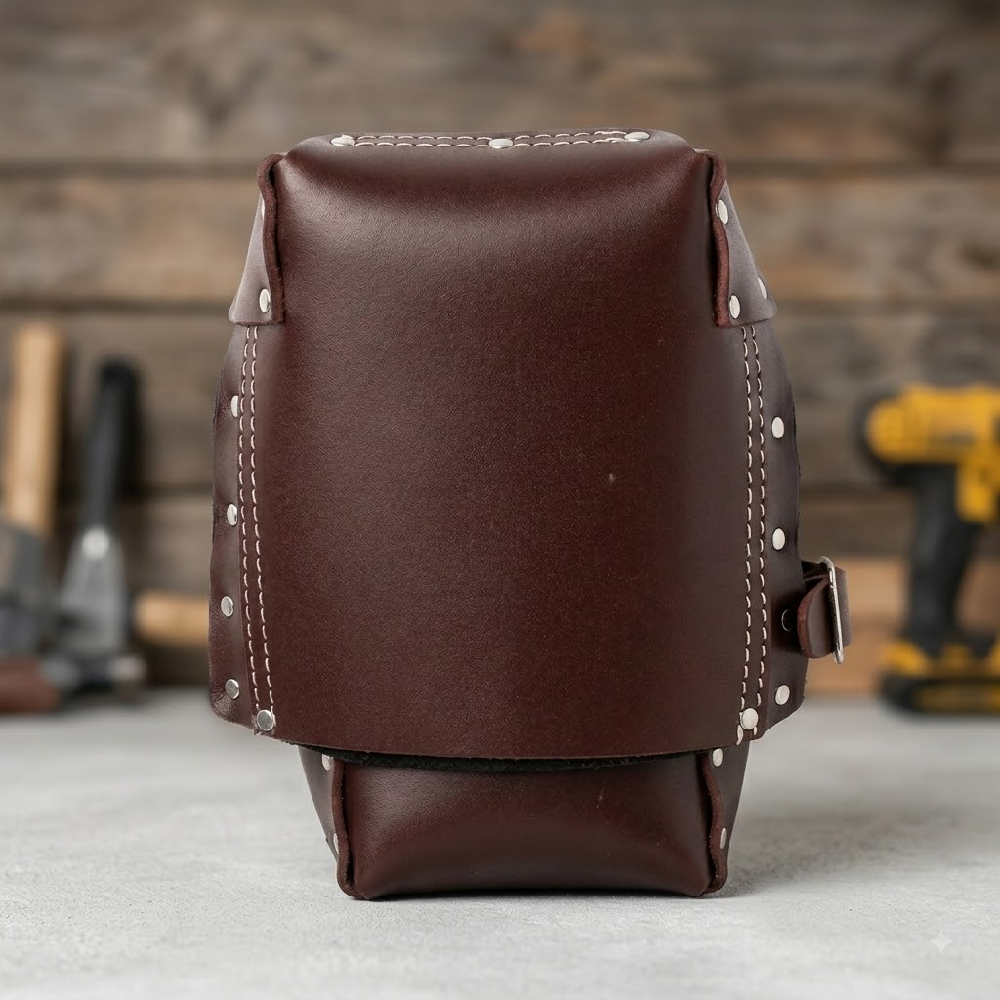
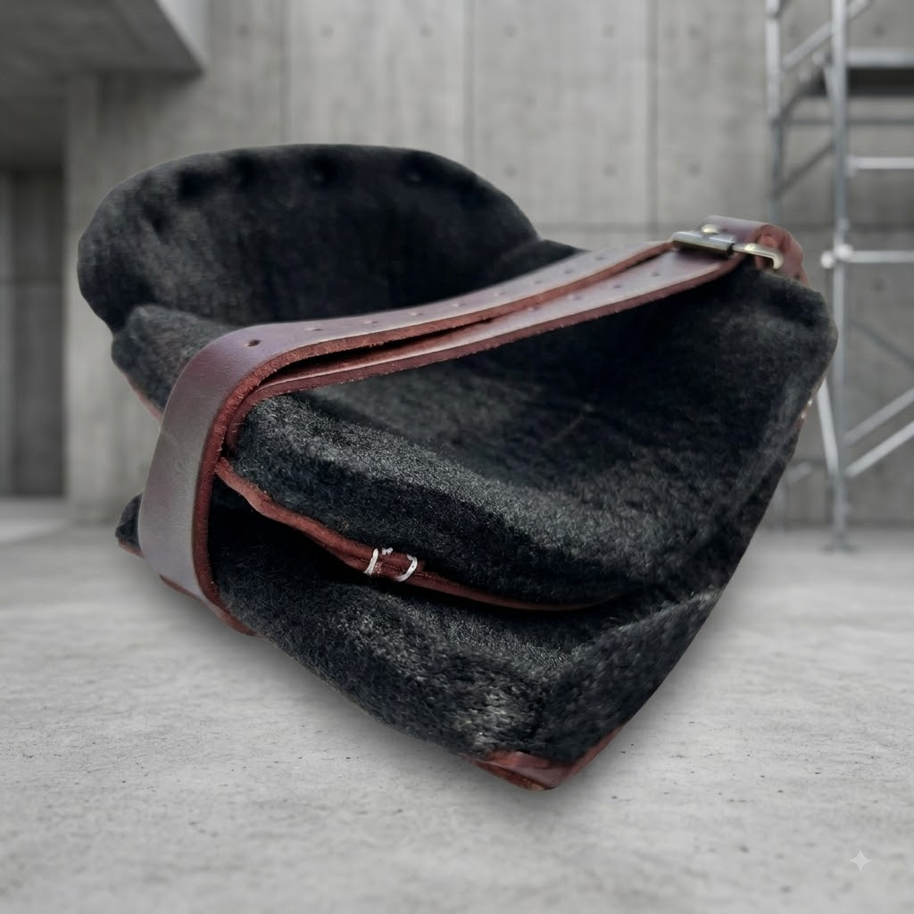

Rodilleras de cuero Zeluga forradas en borrega
$45.00 USD
🦵 Rodilleras de cuero Zeluga — trabaja hincado todo el día sin sufrir
Cuero genuino color vino por fuera y forro de borrega por dentro, con dos correas de cuero y hebilla de metal que se ajustan a tu pierna y no se aflojan al moverte. Copete de cuero reforzado con remaches para aguantar concreto, madera y teja.
✅ Cuero genuino de uso rudo
✅ Forro interior de borrega
✅ Dos correas ajustables con hebilla
✅ Copete reforzado con remaches
✅ No se resbalan al caminar hincado
Presentación en cuero vino. Para instaladores de piso, plomeros y techadores. 💪